work6 では「3. aztfexport を使用する」を検証します。
- Azure 上の Terraform への移行を簡略化します。
- Azure Export for Terraform を使用すると、単一のコマンドで Azure リソースを Terraform に移行できます。
- 単一のコマンドで、ユーザー指定のリソース セットを Terraform HCL コードと状態にエクスポートします。
- 公開されているすべてのプロパティを使用して、既存のインフラストラクチャを検査します。
- 計画/適用ワークフローに従って、Terraform 以外のインフラストラクチャを Terraform に統合します。
Azure Export for Terraform のダウンロード
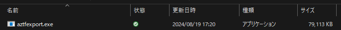
work3 で作成したリソースグループを aztfexport でエクスポートする
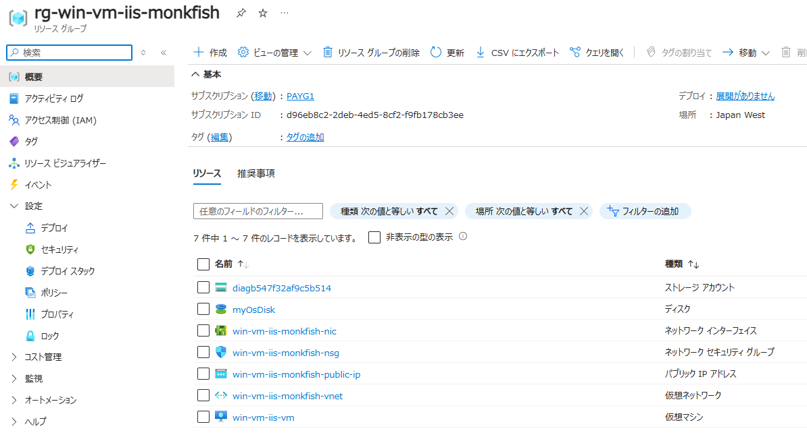
aztfexport resource-group rg-win-vm-iis-monkfish
ファイルやフォルダがあると以下のダイアログが表示される ("N" であれば新しいファイルが生成された)。
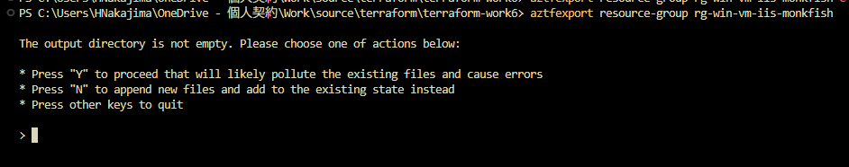
空のディレクトリを用意し、実行した。
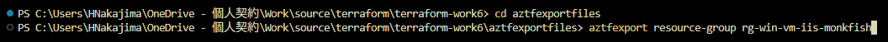
CUI が表示される。
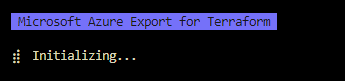
リソースグループ内のリソース一覧が表示される。
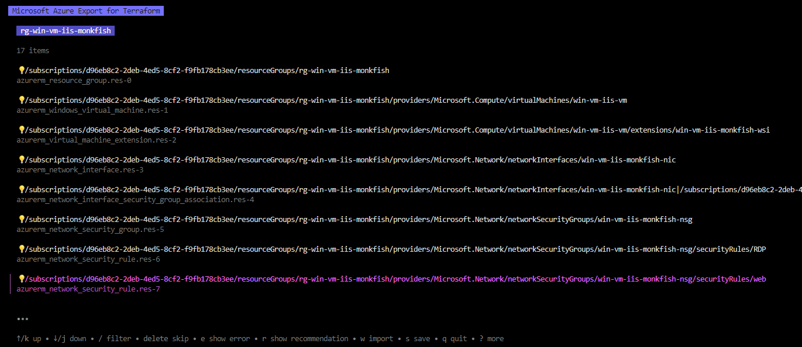
フィルターや取り込まないようスキップすることが可能。
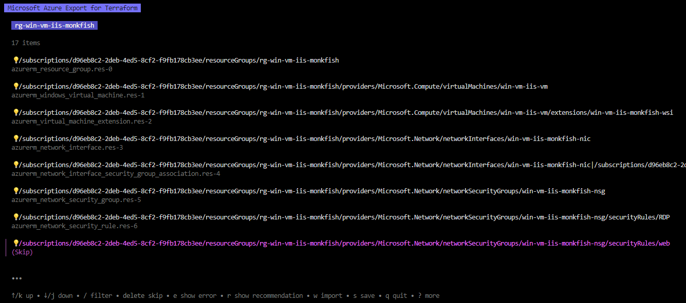
w でインポート開始する。
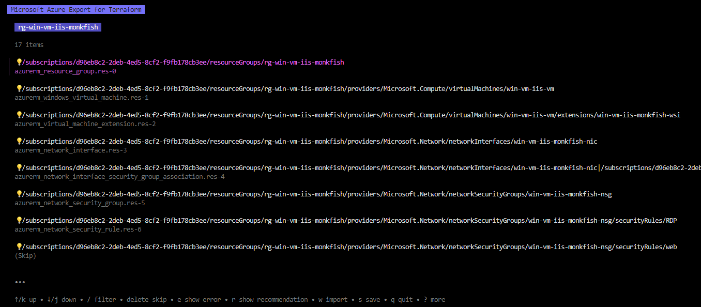
数秒で完了した。
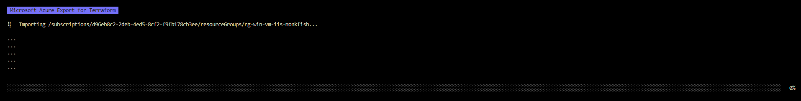
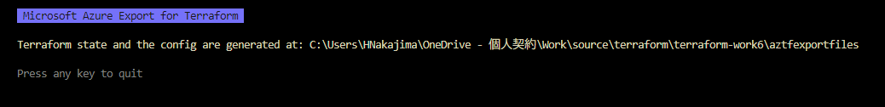
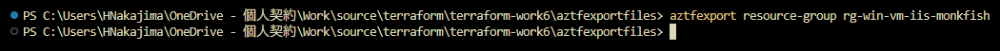
以下のファイルが生成された。
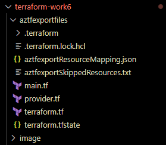
ローカルに tfstate が生成される。(backend を設定していないためリモートバックエンドは生成されない)。
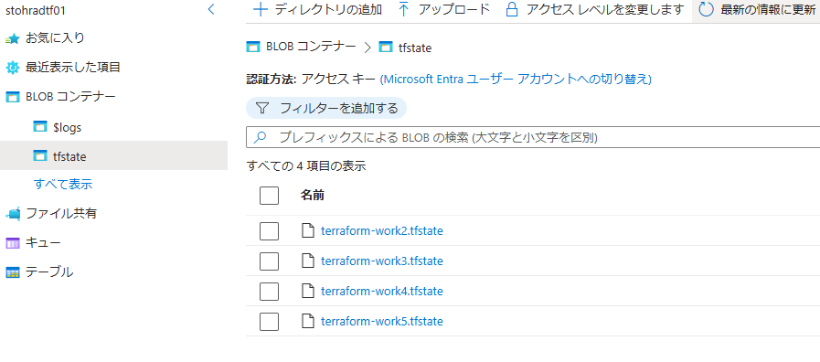
terraform.tf
terraform {
backend "local" {}
required_providers {
azurerm = {
source = "hashicorp/azurerm"
version = "3.99.0"
}
}
}
provider "azurerm" {
features {
}
skip_provider_registration = true
subscription_id = "xxxxxxxx-xxxx-xxxx-xxxx-xxxxxxxxxxxx"
environment = "public"
use_msi = false
use_cli = true
use_oidc = false
}
resource "azurerm_resource_group" "res-0" {
location = "japanwest"
name = "rg-win-vm-iis-monkfish"
}
resource "azurerm_windows_virtual_machine" "res-1" {
admin_password = "ignored-as-imported"
admin_username = "azureuser"
location = "japanwest"
name = "win-vm-iis-vm"
network_interface_ids = ["/subscriptions/xxxxxxxx-xxxx-xxxx-xxxx-xxxxxxxxxxxx/resourceGroups/rg-win-vm-iis-monkfish/providers/Microsoft.Network/networkInterfaces/win-vm-iis-monkfish-nic"]
resource_group_name = "rg-win-vm-iis-monkfish"
size = "Standard_DS1_v2"
boot_diagnostics {
storage_account_uri = "https://diagb547f32af9c5b514.blob.core.windows.net/"
}
os_disk {
caching = "ReadWrite"
storage_account_type = "Premium_LRS"
}
source_image_reference {
offer = "WindowsServer"
publisher = "MicrosoftWindowsServer"
sku = "2022-datacenter-azure-edition"
version = "latest"
}
depends_on = [
azurerm_network_interface.res-3,
]
}
resource "azurerm_virtual_machine_extension" "res-2" {
auto_upgrade_minor_version = true
name = "win-vm-iis-monkfish-wsi"
publisher = "Microsoft.Compute"
settings = jsonencode({
commandToExecute = "powershell -ExecutionPolicy Unrestricted Install-WindowsFeature -Name Web-Server -IncludeAllSubFeature -IncludeManagementTools"
})
type = "CustomScriptExtension"
type_handler_version = "1.8"
virtual_machine_id = "/subscriptions/xxxxxxxx-xxxx-xxxx-xxxx-xxxxxxxxxxxx/resourceGroups/rg-win-vm-iis-monkfish/providers/Microsoft.Compute/virtualMachines/win-vm-iis-vm"
depends_on = [
azurerm_windows_virtual_machine.res-1,
]
}
resource "azurerm_network_interface" "res-3" {
location = "japanwest"
name = "win-vm-iis-monkfish-nic"
resource_group_name = "rg-win-vm-iis-monkfish"
ip_configuration {
name = "terraform_work3_nic_configuration"
private_ip_address_allocation = "Dynamic"
public_ip_address_id = "/subscriptions/xxxxxxxx-xxxx-xxxx-xxxx-xxxxxxxxxxxx/resourceGroups/rg-win-vm-iis-monkfish/providers/Microsoft.Network/publicIPAddresses/win-vm-iis-monkfish-public-ip"
subnet_id = "/subscriptions/xxxxxxxx-xxxx-xxxx-xxxx-xxxxxxxxxxxx/resourceGroups/rg-win-vm-iis-monkfish/providers/Microsoft.Network/virtualNetworks/win-vm-iis-monkfish-vnet/subnets/win-vm-iis-monkfish-subnet"
}
depends_on = [
azurerm_public_ip.res-8,
azurerm_subnet.res-10,
]
}
resource "azurerm_network_interface_security_group_association" "res-4" {
network_interface_id = "/subscriptions/xxxxxxxx-xxxx-xxxx-xxxx-xxxxxxxxxxxx/resourceGroups/rg-win-vm-iis-monkfish/providers/Microsoft.Network/networkInterfaces/win-vm-iis-monkfish-nic"
network_security_group_id = "/subscriptions/xxxxxxxx-xxxx-xxxx-xxxx-xxxxxxxxxxxx/resourceGroups/rg-win-vm-iis-monkfish/providers/Microsoft.Network/networkSecurityGroups/win-vm-iis-monkfish-nsg"
depends_on = [
azurerm_network_interface.res-3,
azurerm_network_security_group.res-5,
]
}
resource "azurerm_network_security_group" "res-5" {
location = "japanwest"
name = "win-vm-iis-monkfish-nsg"
resource_group_name = "rg-win-vm-iis-monkfish"
depends_on = [
azurerm_resource_group.res-0,
]
}
resource "azurerm_network_security_rule" "res-6" {
access = "Allow"
destination_address_prefix = "*"
destination_port_range = "3389"
direction = "Inbound"
name = "RDP"
network_security_group_name = "win-vm-iis-monkfish-nsg"
priority = 1000
protocol = "*"
resource_group_name = "rg-win-vm-iis-monkfish"
source_address_prefix = "120.75.97.239"
source_port_range = "*"
depends_on = [
azurerm_network_security_group.res-5,
]
}
resource "azurerm_public_ip" "res-8" {
allocation_method = "Static"
location = "japanwest"
name = "win-vm-iis-monkfish-public-ip"
resource_group_name = "rg-win-vm-iis-monkfish"
sku = "Standard"
depends_on = [
azurerm_resource_group.res-0,
]
}
resource "azurerm_virtual_network" "res-9" {
address_space = ["10.0.0.0/16"]
location = "japanwest"
name = "win-vm-iis-monkfish-vnet"
resource_group_name = "rg-win-vm-iis-monkfish"
depends_on = [
azurerm_resource_group.res-0,
]
}
resource "azurerm_subnet" "res-10" {
address_prefixes = ["10.0.1.0/24"]
name = "win-vm-iis-monkfish-subnet"
resource_group_name = "rg-win-vm-iis-monkfish"
virtual_network_name = "win-vm-iis-monkfish-vnet"
depends_on = [
azurerm_virtual_network.res-9,
]
}
resource "azurerm_storage_account" "res-11" {
account_replication_type = "LRS"
account_tier = "Standard"
cross_tenant_replication_enabled = false
location = "japanwest"
name = "diagb547f32af9c5b514"
resource_group_name = "rg-win-vm-iis-monkfish"
depends_on = [
azurerm_resource_group.res-0,
]
}
resource "azurerm_storage_container" "res-13" {
name = "bootdiagnostics-winvmiisv-c939e3cb-3cad-43b8-8881-0bbf0a9abfa2"
storage_account_name = "diagb547f32af9c5b514"
}
aztfexportResourceMapping.json
{
"/subscriptions/xxxxxxxx-xxxx-xxxx-xxxx-xxxxxxxxxxxx/resourceGroups/rg-win-vm-iis-monkfish": {
"resource_id": "/subscriptions/xxxxxxxx-xxxx-xxxx-xxxx-xxxxxxxxxxxx/resourceGroups/rg-win-vm-iis-monkfish",
"resource_type": "azurerm_resource_group",
"resource_name": "res-0"
},
"/subscriptions/xxxxxxxx-xxxx-xxxx-xxxx-xxxxxxxxxxxx/resourceGroups/rg-win-vm-iis-monkfish/providers/Microsoft.Compute/virtualMachines/win-vm-iis-vm": {
"resource_id": "/subscriptions/xxxxxxxx-xxxx-xxxx-xxxx-xxxxxxxxxxxx/resourceGroups/rg-win-vm-iis-monkfish/providers/Microsoft.Compute/virtualMachines/win-vm-iis-vm",
"resource_type": "azurerm_windows_virtual_machine",
"resource_name": "res-1"
},
"/subscriptions/xxxxxxxx-xxxx-xxxx-xxxx-xxxxxxxxxxxx/resourceGroups/rg-win-vm-iis-monkfish/providers/Microsoft.Compute/virtualMachines/win-vm-iis-vm/extensions/win-vm-iis-monkfish-wsi": {
"resource_id": "/subscriptions/xxxxxxxx-xxxx-xxxx-xxxx-xxxxxxxxxxxx/resourceGroups/rg-win-vm-iis-monkfish/providers/Microsoft.Compute/virtualMachines/win-vm-iis-vm/extensions/win-vm-iis-monkfish-wsi",
"resource_type": "azurerm_virtual_machine_extension",
"resource_name": "res-2"
},
"/subscriptions/xxxxxxxx-xxxx-xxxx-xxxx-xxxxxxxxxxxx/resourceGroups/rg-win-vm-iis-monkfish/providers/Microsoft.Network/networkInterfaces/win-vm-iis-monkfish-nic": {
"resource_id": "/subscriptions/xxxxxxxx-xxxx-xxxx-xxxx-xxxxxxxxxxxx/resourceGroups/rg-win-vm-iis-monkfish/providers/Microsoft.Network/networkInterfaces/win-vm-iis-monkfish-nic",
"resource_type": "azurerm_network_interface",
"resource_name": "res-3"
},
"/subscriptions/xxxxxxxx-xxxx-xxxx-xxxx-xxxxxxxxxxxx/resourceGroups/rg-win-vm-iis-monkfish/providers/Microsoft.Network/networkInterfaces/win-vm-iis-monkfish-nic/networkSecurityGroups/L3N1YnNjcmlwdGlvbnMvZDk2ZWI4YzItMmRlYi00ZWQ1LThjZjItZjlmYjE3OGNiM2VlL3Jlc291cmNlR3JvdXBzL3JnLXdpbi12bS1paXMtbW9ua2Zpc2gvcHJvdmlkZXJzL01pY3Jvc29mdC5OZXR3b3JrL25ldHdvcmtTZWN1cml0eUdyb3Vwcy93aW4tdm0taWlzLW1vbmtmaXNoLW5zZw==": {
"resource_id": "/subscriptions/xxxxxxxx-xxxx-xxxx-xxxx-xxxxxxxxxxxx/resourceGroups/rg-win-vm-iis-monkfish/providers/Microsoft.Network/networkInterfaces/win-vm-iis-monkfish-nic|/subscriptions/xxxxxxxx-xxxx-xxxx-xxxx-xxxxxxxxxxxx/resourceGroups/rg-win-vm-iis-monkfish/providers/Microsoft.Network/networkSecurityGroups/win-vm-iis-monkfish-nsg",
"resource_type": "azurerm_network_interface_security_group_association",
"resource_name": "res-4"
},
"/subscriptions/xxxxxxxx-xxxx-xxxx-xxxx-xxxxxxxxxxxx/resourceGroups/rg-win-vm-iis-monkfish/providers/Microsoft.Network/networkSecurityGroups/win-vm-iis-monkfish-nsg": {
"resource_id": "/subscriptions/xxxxxxxx-xxxx-xxxx-xxxx-xxxxxxxxxxxx/resourceGroups/rg-win-vm-iis-monkfish/providers/Microsoft.Network/networkSecurityGroups/win-vm-iis-monkfish-nsg",
"resource_type": "azurerm_network_security_group",
"resource_name": "res-5"
},
"/subscriptions/xxxxxxxx-xxxx-xxxx-xxxx-xxxxxxxxxxxx/resourceGroups/rg-win-vm-iis-monkfish/providers/Microsoft.Network/networkSecurityGroups/win-vm-iis-monkfish-nsg/securityRules/RDP": {
"resource_id": "/subscriptions/xxxxxxxx-xxxx-xxxx-xxxx-xxxxxxxxxxxx/resourceGroups/rg-win-vm-iis-monkfish/providers/Microsoft.Network/networkSecurityGroups/win-vm-iis-monkfish-nsg/securityRules/RDP",
"resource_type": "azurerm_network_security_rule",
"resource_name": "res-6"
},
"/subscriptions/xxxxxxxx-xxxx-xxxx-xxxx-xxxxxxxxxxxx/resourceGroups/rg-win-vm-iis-monkfish/providers/Microsoft.Network/publicIPAddresses/win-vm-iis-monkfish-public-ip": {
"resource_id": "/subscriptions/xxxxxxxx-xxxx-xxxx-xxxx-xxxxxxxxxxxx/resourceGroups/rg-win-vm-iis-monkfish/providers/Microsoft.Network/publicIPAddresses/win-vm-iis-monkfish-public-ip",
"resource_type": "azurerm_public_ip",
"resource_name": "res-8"
},
"/subscriptions/xxxxxxxx-xxxx-xxxx-xxxx-xxxxxxxxxxxx/resourceGroups/rg-win-vm-iis-monkfish/providers/Microsoft.Network/virtualNetworks/win-vm-iis-monkfish-vnet": {
"resource_id": "/subscriptions/xxxxxxxx-xxxx-xxxx-xxxx-xxxxxxxxxxxx/resourceGroups/rg-win-vm-iis-monkfish/providers/Microsoft.Network/virtualNetworks/win-vm-iis-monkfish-vnet",
"resource_type": "azurerm_virtual_network",
"resource_name": "res-9"
},
"/subscriptions/xxxxxxxx-xxxx-xxxx-xxxx-xxxxxxxxxxxx/resourceGroups/rg-win-vm-iis-monkfish/providers/Microsoft.Network/virtualNetworks/win-vm-iis-monkfish-vnet/subnets/win-vm-iis-monkfish-subnet": {
"resource_id": "/subscriptions/xxxxxxxx-xxxx-xxxx-xxxx-xxxxxxxxxxxx/resourceGroups/rg-win-vm-iis-monkfish/providers/Microsoft.Network/virtualNetworks/win-vm-iis-monkfish-vnet/subnets/win-vm-iis-monkfish-subnet",
"resource_type": "azurerm_subnet",
"resource_name": "res-10"
},
"/subscriptions/xxxxxxxx-xxxx-xxxx-xxxx-xxxxxxxxxxxx/resourceGroups/rg-win-vm-iis-monkfish/providers/Microsoft.Storage/storageAccounts/diagb547f32af9c5b514": {
"resource_id": "/subscriptions/xxxxxxxx-xxxx-xxxx-xxxx-xxxxxxxxxxxx/resourceGroups/rg-win-vm-iis-monkfish/providers/Microsoft.Storage/storageAccounts/diagb547f32af9c5b514",
"resource_type": "azurerm_storage_account",
"resource_name": "res-11"
},
"/subscriptions/xxxxxxxx-xxxx-xxxx-xxxx-xxxxxxxxxxxx/resourceGroups/rg-win-vm-iis-monkfish/providers/Microsoft.Storage/storageAccounts/diagb547f32af9c5b514/blobServices/default/containers/bootdiagnostics-winvmiisv-c939e3cb-3cad-43b8-8881-0bbf0a9abfa2": {
"resource_id": "https://diagb547f32af9c5b514.blob.core.windows.net/bootdiagnostics-winvmiisv-c939e3cb-3cad-43b8-8881-0bbf0a9abfa2",
"resource_type": "azurerm_storage_container",
"resource_name": "res-13"
}
}
aztfexportSkippedResources.txt
Following resources are marked to be skipped:
- /subscriptions/xxxxxxxx-xxxx-xxxx-xxxx-xxxxxxxxxxxx/resourceGroups/rg-win-vm-iis-monkfish/providers/Microsoft.Network/networkSecurityGroups/win-vm-iis-monkfish-nsg/securityRules/web
- /subscriptions/xxxxxxxx-xxxx-xxxx-xxxx-xxxxxxxxxxxx/resourceGroups/rg-win-vm-iis-monkfish/providers/Microsoft.Storage/storageAccounts/diagb547f32af9c5b514/blobServices/default
- /subscriptions/xxxxxxxx-xxxx-xxxx-xxxx-xxxxxxxxxxxx/resourceGroups/rg-win-vm-iis-monkfish/providers/Microsoft.Storage/storageAccounts/diagb547f32af9c5b514/fileServices/default
- /subscriptions/xxxxxxxx-xxxx-xxxx-xxxx-xxxxxxxxxxxx/resourceGroups/rg-win-vm-iis-monkfish/providers/Microsoft.Storage/storageAccounts/diagb547f32af9c5b514/queueServices/default
- /subscriptions/xxxxxxxx-xxxx-xxxx-xxxx-xxxxxxxxxxxx/resourceGroups/rg-win-vm-iis-monkfish/providers/Microsoft.Storage/storageAccounts/diagb547f32af9c5b514/tableServices/default
terraform.tfstate
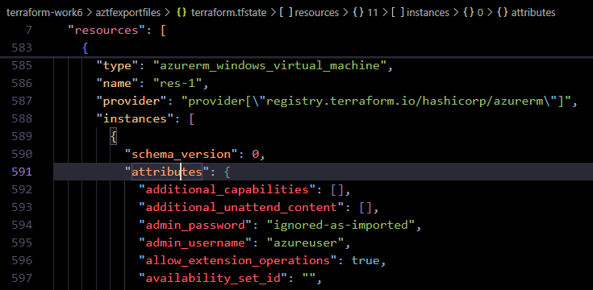
terraform init / terraform plan してみる
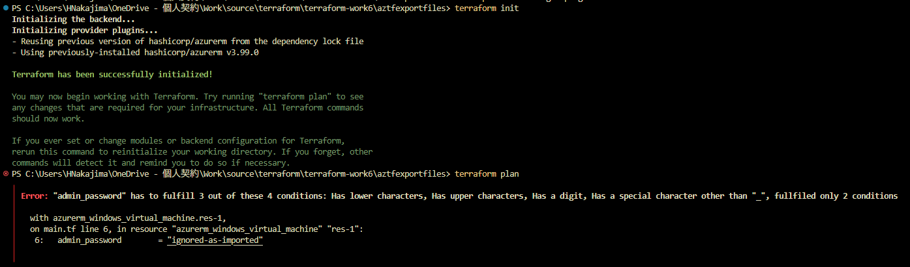
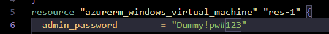
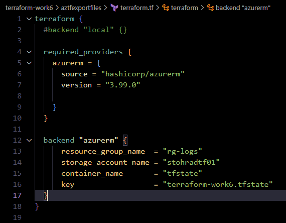
再度 terraform init / terraform plan してみる
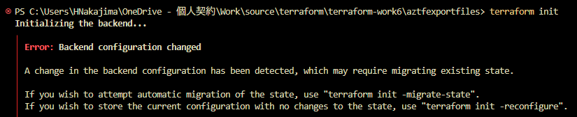
PS C:\Users\HNakajima\OneDrive - 個人契約\Work\source\terraform\terraform-work6\aztfexportfiles> terraform init
Initializing the backend...
╷
│ Error: Backend configuration changed
│
│ A change in the backend configuration has been detected, which may require migrating existing state.
│
│ If you wish to attempt automatic migration of the state, use "terraform init -migrate-state".
│ If you wish to store the current configuration with no changes to the state, use "terraform init -reconfigure".
╵
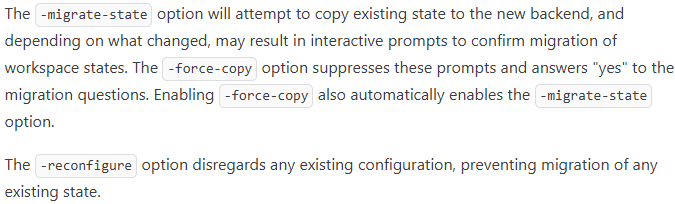
既存のステートをリモートに持っていきたいので terraform init -migrate-state を実行する
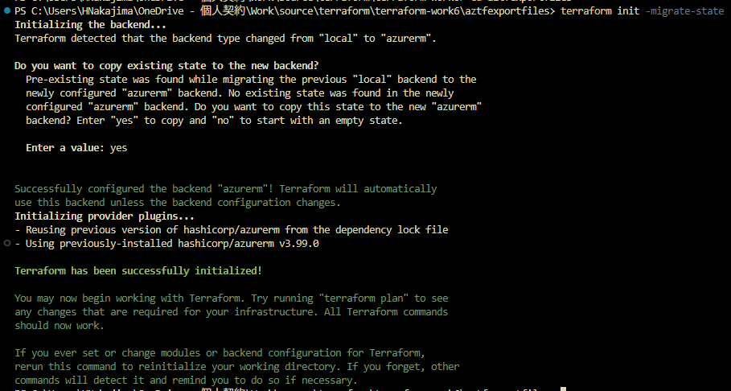
PS C:\Users\HNakajima\OneDrive - 個人契約\Work\source\terraform\terraform-work6\aztfexportfiles> terraform init -migrate-state
Initializing the backend...
Terraform detected that the backend type changed from "local" to "azurerm".
Do you want to copy existing state to the new backend?
Pre-existing state was found while migrating the previous "local" backend to the
newly configured "azurerm" backend. No existing state was found in the newly
configured "azurerm" backend. Do you want to copy this state to the new "azurerm"
backend? Enter "yes" to copy and "no" to start with an empty state.
Enter a value: yes
Successfully configured the backend "azurerm"! Terraform will automatically
use this backend unless the backend configuration changes.
Initializing provider plugins...
- Reusing previous version of hashicorp/azurerm from the dependency lock file
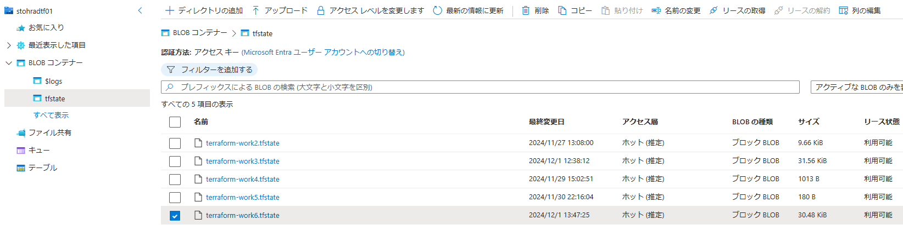
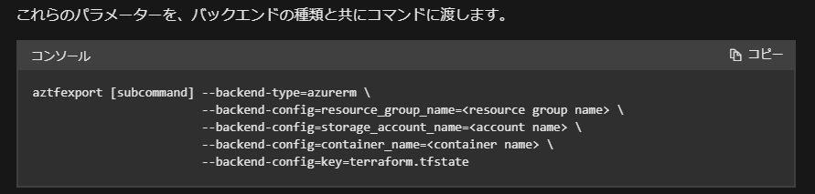
terraform plan を実行する
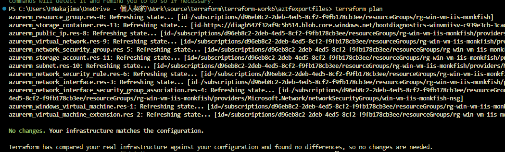
PS C:\Users\HNakajima\OneDrive - 個人契約\Work\source\terraform\terraform-work6\aztfexportfiles> terraform plan
azurerm_resource_group.res-0: Refreshing state... [id=/subscriptions/xxxxxxxx-xxxx-xxxx-xxxx-xxxxxxxxxxxx/resourceGroups/rg-win-vm-iis-monkfish]
azurerm_storage_container.res-13: Refreshing state... [id=https://diagb547f32af9c5b514.blob.core.windows.net/bootdiagnostics-winvmiisv-c939e3cb-3cad-43b8-8881-0bbf0a9abfa2]
azurerm_public_ip.res-8: Refreshing state... [id=/subscriptions/xxxxxxxx-xxxx-xxxx-xxxx-xxxxxxxxxxxx/resourceGroups/rg-win-vm-iis-monkfish/providers/Microsoft.Network/publicIPAddresses/win-vm-iis-monkfish-public-ip]
azurerm_virtual_network.res-9: Refreshing state... [id=/subscriptions/xxxxxxxx-xxxx-xxxx-xxxx-xxxxxxxxxxxx/resourceGroups/rg-win-vm-iis-monkfish/providers/Microsoft.Network/virtualNetworks/win-vm-iis-monkfish-vnet]
azurerm_network_security_group.res-5: Refreshing state... [id=/subscriptions/xxxxxxxx-xxxx-xxxx-xxxx-xxxxxxxxxxxx/resourceGroups/rg-win-vm-iis-monkfish/providers/Microsoft.Network/networkSecurityGroups/win-vm-iis-monkfish-nsg]
azurerm_storage_account.res-11: Refreshing state... [id=/subscriptions/xxxxxxxx-xxxx-xxxx-xxxx-xxxxxxxxxxxx/resourceGroups/rg-win-vm-iis-monkfish/providers/Microsoft.Storage/storageAccounts/diagb547f32af9c5b514]
azurerm_subnet.res-10: Refreshing state... [id=/subscriptions/xxxxxxxx-xxxx-xxxx-xxxx-xxxxxxxxxxxx/resourceGroups/rg-win-vm-iis-monkfish/providers/Microsoft.Network/virtualNetworks/win-vm-iis-monkfish-vnet/subnets/win-vm-iis-monkfish-subnet]
azurerm_network_security_rule.res-6: Refreshing state... [id=/subscriptions/xxxxxxxx-xxxx-xxxx-xxxx-xxxxxxxxxxxx/resourceGroups/rg-win-vm-iis-monkfish/providers/Microsoft.Network/networkSecurityGroups/win-vm-iis-monkfish-nsg/securityRules/RDP]
azurerm_network_interface.res-3: Refreshing state... [id=/subscriptions/xxxxxxxx-xxxx-xxxx-xxxx-xxxxxxxxxxxx/resourceGroups/rg-win-vm-iis-monkfish/providers/Microsoft.Network/networkInterfaces/win-vm-iis-monkfish-nic]
azurerm_network_interface_security_group_association.res-4: Refreshing state... [id=/subscriptions/xxxxxxxx-xxxx-xxxx-xxxx-xxxxxxxxxxxx/resourceGroups/rg-win-vm-iis-monkfish/providers/Microsoft.Network/networkInterfaces/win-vm-iis-monkfish-nic|/subscriptions/xxxxxxxx-xxxx-
4ed5-8cf2-f9fb178cb3ee/resourceGroups/rg-win-vm-iis-monkfish/providers/Microsoft.Network/networkSecurityGroups/win-vm-iis-monkfish-nsg] azurerm_windows_virtual_machine.res-1: Refreshing state... [id=/subscriptions/xxxxxxxx-xxxx-xxxx-xxxx-xxxxxxxxxxxx/resourceGroups/rg-win-vm-iis-monkfish/providers/Microsoft.Compute/virtualMachines/win-vm-iis-vm]
azurerm_virtual_machine_extension.res-2: Refreshing state... [id=/subscriptions/xxxxxxxx-xxxx-xxxx-xxxx-xxxxxxxxxxxx/resourceGroups/rg-win-vm-iis-monkfish/providers/Microsoft.Compute/virtualMachines/win-vm-iis-vm/extensions/win-vm-iis-monkfish-wsi]
No changes. Your infrastructure matches the configuration.
Terraform has compared your real infrastructure against your configuration and found no differences, so no changes are needed.
生成した tf ファイルに Application Gateway を追記し、既存リソースとともに Terraform で管理可能とする
クイックスタート: Azure Application Gateway で Web トラフィックを転送する - Terraform
# ####################################################################
# Application Gateway を追加
# ####################################################################
variable "backend_address_pool_name" {
default = "myBackendPool"
}
variable "frontend_port_name" {
default = "myFrontendPort"
}
variable "frontend_ip_configuration_name" {
default = "myAGIPConfig"
}
variable "http_setting_name" {
default = "myHTTPsetting"
}
variable "listener_name" {
default = "myListener"
}
variable "request_routing_rule_name" {
default = "myRoutingRule"
}
resource "azurerm_subnet" "frontend" {
name = "myAGSubnet"
resource_group_name = azurerm_resource_group.res-0.name
virtual_network_name = azurerm_virtual_network.res-9.name
address_prefixes = ["10.0.10.0/24"]
}
resource "azurerm_public_ip" "pip" {
name = "myAGPublicIPAddress"
resource_group_name = azurerm_resource_group.res-0.name
location = azurerm_resource_group.res-0.location
allocation_method = "Static"
sku = "Standard"
}
resource "azurerm_application_gateway" "main" {
name = "myAppGateway"
resource_group_name = azurerm_resource_group.res-0.name
location = azurerm_resource_group.res-0.location
sku {
name = "Standard_v2"
tier = "Standard_v2"
capacity = 2
}
gateway_ip_configuration {
name = "my-gateway-ip-configuration"
subnet_id = azurerm_subnet.frontend.id
}
frontend_port {
name = var.frontend_port_name
port = 80
}
frontend_ip_configuration {
name = var.frontend_ip_configuration_name
public_ip_address_id = azurerm_public_ip.pip.id
}
backend_address_pool {
name = var.backend_address_pool_name
}
backend_http_settings {
name = var.http_setting_name
cookie_based_affinity = "Disabled"
port = 80
protocol = "Http"
request_timeout = 60
}
http_listener {
name = var.listener_name
frontend_ip_configuration_name = var.frontend_ip_configuration_name
frontend_port_name = var.frontend_port_name
protocol = "Http"
}
request_routing_rule {
name = var.request_routing_rule_name
rule_type = "Basic"
http_listener_name = var.listener_name
backend_address_pool_name = var.backend_address_pool_name
backend_http_settings_name = var.http_setting_name
priority = 1
}
}
resource "azurerm_network_interface_application_gateway_backend_address_pool_association" "nic-assoc" {
network_interface_id = azurerm_network_interface.res-3.id
ip_configuration_name = "terraform_work3_nic_configuration"
backend_address_pool_id = one(azurerm_application_gateway.main.backend_address_pool).id
}
terraform plan / terraform apply する
terraform plan する。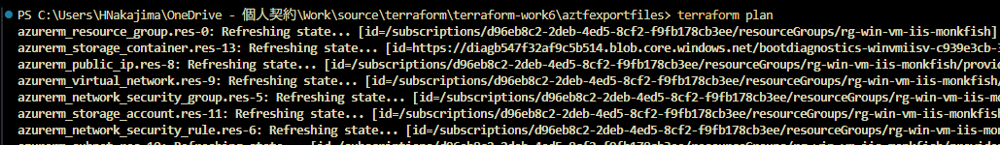
PS C:\Users\HNakajima\OneDrive - 個人契約\Work\source\terraform\terraform-work6\aztfexportfiles> terraform plan
azurerm_resource_group.res-0: Refreshing state... [id=/subscriptions/xxxxxxxx-xxxx-xxxx-xxxx-xxxxxxxxxxxx/resourceGroups/rg-win-vm-iis-monkfish]
azurerm_storage_container.res-13: Refreshing state... [id=https://diagb547f32af9c5b514.blob.core.windows.net/bootdiagnostics-winvmiisv-c939e3cb-3cad-43b8-8881-0bbf0a9abfa2]
azurerm_public_ip.res-8: Refreshing state... [id=/subscriptions/xxxxxxxx-xxxx-xxxx-xxxx-xxxxxxxxxxxx/resourceGroups/rg-win-vm-iis-monkfish/providers/Microsoft.Network/publicIPAddresses/win-vm-iis-monkfish-public-ip]
azurerm_virtual_network.res-9: Refreshing state... [id=/subscriptions/xxxxxxxx-xxxx-xxxx-xxxx-xxxxxxxxxxxx/resourceGroups/rg-win-vm-iis-monkfish/providers/Microsoft.Network/virtualNetworks/win-vm-iis-monkfish-vnet]
azurerm_network_security_group.res-5: Refreshing state... [id=/subscriptions/xxxxxxxx-xxxx-xxxx-xxxx-xxxxxxxxxxxx/resourceGroups/rg-win-vm-iis-monkfish/providers/Microsoft.Network/networkSecurityGroups/win-vm-iis-monkfish-nsg]
azurerm_storage_account.res-11: Refreshing state... [id=/subscriptions/xxxxxxxx-xxxx-xxxx-xxxx-xxxxxxxxxxxx/resourceGroups/rg-win-vm-iis-monkfish/providers/Microsoft.Storage/storageAccounts/diagb547f32af9c5b514]
azurerm_network_security_rule.res-6: Refreshing state... [id=/subscriptions/xxxxxxxx-xxxx-xxxx-xxxx-xxxxxxxxxxxx/resourceGroups/rg-win-vm-iis-monkfish/providers/Microsoft.Network/networkSecurityGroups/win-vm-iis-monkfish-nsg/securityRules/RDP]
azurerm_subnet.res-10: Refreshing state... [id=/subscriptions/xxxxxxxx-xxxx-xxxx-xxxx-xxxxxxxxxxxx/resourceGroups/rg-win-vm-iis-monkfish/providers/Microsoft.Network/virtualNetworks/win-vm-iis-monkfish-vnet/subnets/win-vm-iis-monkfish-subnet]
azurerm_network_interface.res-3: Refreshing state... [id=/subscriptions/xxxxxxxx-xxxx-xxxx-xxxx-xxxxxxxxxxxx/resourceGroups/rg-win-vm-iis-monkfish/providers/Microsoft.Network/networkInterfaces/win-vm-iis-monkfish-nic]
azurerm_network_interface_security_group_association.res-4: Refreshing state... [id=/subscriptions/xxxxxxxx-xxxx-xxxx-xxxx-xxxxxxxxxxxx/resourceGroups/rg-win-vm-iis-monkfish/providers/Microsoft.Network/networkInterfaces/win-vm-iis-monkfish-nic|/subscriptions/xxxxxxxx-xxxx-
4ed5-8cf2-f9fb178cb3ee/resourceGroups/rg-win-vm-iis-monkfish/providers/Microsoft.Network/networkSecurityGroups/win-vm-iis-monkfish-nsg] azurerm_windows_virtual_machine.res-1: Refreshing state... [id=/subscriptions/xxxxxxxx-xxxx-xxxx-xxxx-xxxxxxxxxxxx/resourceGroups/rg-win-vm-iis-monkfish/providers/Microsoft.Compute/virtualMachines/win-vm-iis-vm]
azurerm_virtual_machine_extension.res-2: Refreshing state... [id=/subscriptions/xxxxxxxx-xxxx-xxxx-xxxx-xxxxxxxxxxxx/resourceGroups/rg-win-vm-iis-monkfish/providers/Microsoft.Compute/virtualMachines/win-vm-iis-vm/extensions/win-vm-iis-monkfish-wsi]
Terraform used the selected providers to generate the following execution plan. Resource actions are indicated with the following symbols:
+ create
Terraform will perform the following actions:
# azurerm_application_gateway.main will be created
+ resource "azurerm_application_gateway" "main" {
+ id = (known after apply)
+ location = "japanwest"
+ name = "myAppGateway"
+ private_endpoint_connection = (known after apply)
+ resource_group_name = "rg-win-vm-iis-monkfish"
+ backend_address_pool {
+ fqdns = []
+ id = (known after apply)
+ ip_addresses = []
+ name = "myBackendPool"
}
+ backend_http_settings {
+ cookie_based_affinity = "Disabled"
+ id = (known after apply)
+ name = "myHTTPsetting"
+ pick_host_name_from_backend_address = false
+ port = 80
+ probe_id = (known after apply)
+ protocol = "Http"
+ request_timeout = 60
+ trusted_root_certificate_names = []
# (4 unchanged attributes hidden)
}
+ frontend_ip_configuration {
+ id = (known after apply)
+ name = "myAGIPConfig"
+ private_ip_address = (known after apply)
+ private_ip_address_allocation = "Dynamic"
+ private_link_configuration_id = (known after apply)
+ public_ip_address_id = (known after apply)
}
+ frontend_port {
+ id = (known after apply)
+ name = "myFrontendPort"
+ port = 80
}
+ gateway_ip_configuration {
+ id = (known after apply)
+ name = "my-gateway-ip-configuration"
+ subnet_id = (known after apply)
}
+ http_listener {
+ frontend_ip_configuration_id = (known after apply)
+ frontend_ip_configuration_name = "myAGIPConfig"
+ frontend_port_id = (known after apply)
+ frontend_port_name = "myFrontendPort"
+ host_names = []
+ id = (known after apply)
+ name = "myListener"
+ protocol = "Http"
+ ssl_certificate_id = (known after apply)
+ ssl_profile_id = (known after apply)
# (4 unchanged attributes hidden)
}
+ request_routing_rule {
+ backend_address_pool_id = (known after apply)
+ backend_address_pool_name = "myBackendPool"
+ backend_http_settings_id = (known after apply)
+ backend_http_settings_name = "myHTTPsetting"
+ http_listener_id = (known after apply)
+ http_listener_name = "myListener"
+ id = (known after apply)
+ name = "myRoutingRule"
+ priority = 1
+ redirect_configuration_id = (known after apply)
+ rewrite_rule_set_id = (known after apply)
+ rule_type = "Basic"
+ url_path_map_id = (known after apply)
# (3 unchanged attributes hidden)
}
+ sku {
+ capacity = 2
+ name = "Standard_v2"
+ tier = "Standard_v2"
}
+ ssl_policy (known after apply)
}
# azurerm_network_interface_application_gateway_backend_address_pool_association.nic-assoc will be created
+ resource "azurerm_network_interface_application_gateway_backend_address_pool_association" "nic-assoc" {
+ backend_address_pool_id = (known after apply)
+ id = (known after apply)
+ ip_configuration_name = "terraform_work3_nic_configuration"
+ network_interface_id = "/subscriptions/xxxxxxxx-xxxx-xxxx-xxxx-xxxxxxxxxxxx/resourceGroups/rg-win-vm-iis-monkfish/providers/Microsoft.Network/networkInterfaces/win-vm-iis-monkfish-nic"
}
# azurerm_public_ip.pip will be created
+ resource "azurerm_public_ip" "pip" {
+ allocation_method = "Static"
+ ddos_protection_mode = "VirtualNetworkInherited"
+ fqdn = (known after apply)
+ id = (known after apply)
+ idle_timeout_in_minutes = 4
+ ip_address = (known after apply)
+ ip_version = "IPv4"
+ location = "japanwest"
+ name = "myAGPublicIPAddress"
+ resource_group_name = "rg-win-vm-iis-monkfish"
+ sku = "Standard"
+ sku_tier = "Regional"
}
# azurerm_subnet.frontend will be created
+ resource "azurerm_subnet" "frontend" {
+ address_prefixes = [
+ "10.0.10.0/24",
]
+ enforce_private_link_endpoint_network_policies = (known after apply)
+ enforce_private_link_service_network_policies = (known after apply)
+ id = (known after apply)
+ name = "myAGSubnet"
+ private_endpoint_network_policies_enabled = (known after apply)
+ private_link_service_network_policies_enabled = (known after apply)
+ resource_group_name = "rg-win-vm-iis-monkfish"
+ virtual_network_name = "win-vm-iis-monkfish-vnet"
}
Plan: 4 to add, 0 to change, 0 to destroy.
──────────────────────────────────────────────────────────
Note: You didn't use the -out option to save this plan, so Terraform can't guarantee to take exactly these actions if you run "terraform apply" now.
terraform apply する。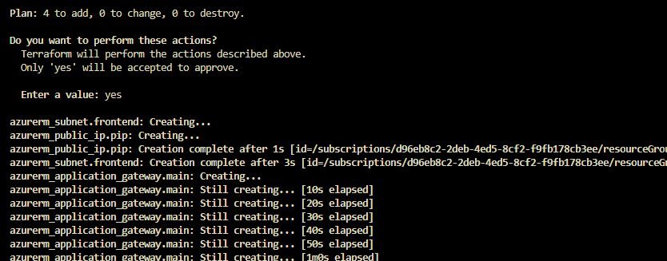
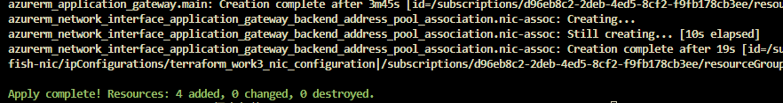
リソースが追加された
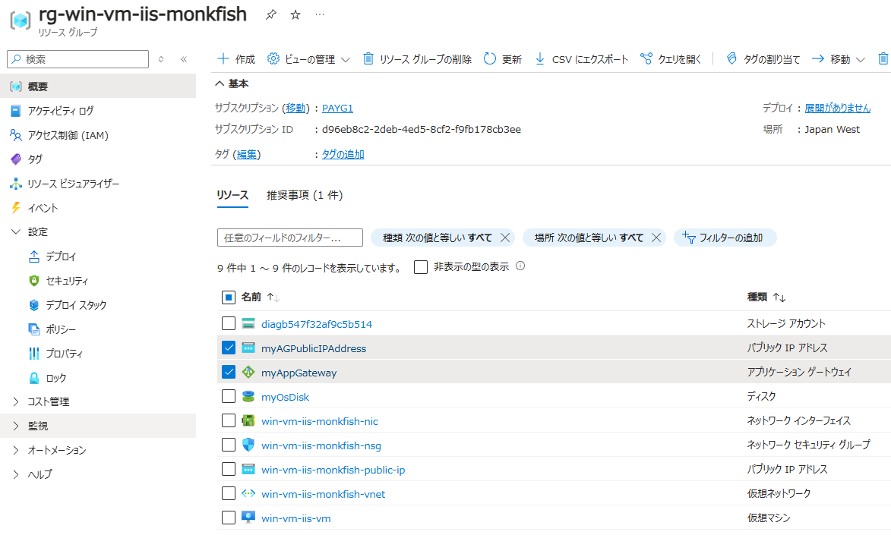
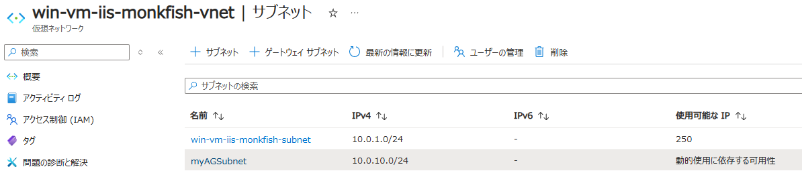
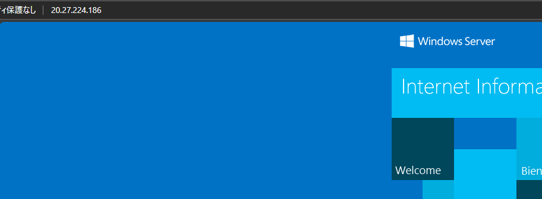
tfstate ファイルも更新されている
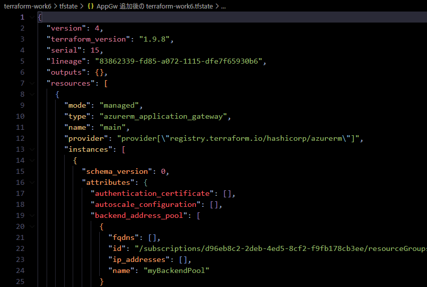
terraform destroy 実行する。
特に問題なく完了した。
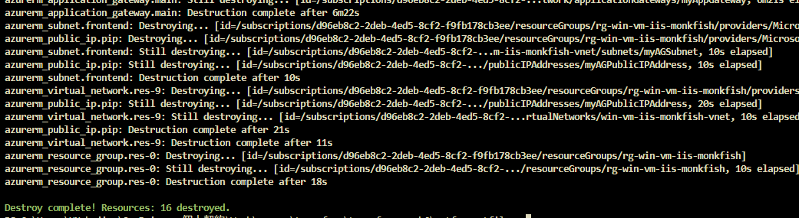
PS C:\Users\HNakajima\OneDrive - 個人契約\Work\source\terraform\terraform-work6\aztfexportfiles> terraform destroy
azurerm_resource_group.res-0: Refreshing state... [id=/subscriptions/xxxxxxxx-xxxx-xxxx-xxxx-xxxxxxxxxxxx/resourceGroups/rg-win-vm-iis-monkfish]
azurerm_storage_container.res-13: Refreshing state... [id=https://diagb547f32af9c5b514.blob.core.windows.net/bootdiagnostics-winvmiisv-c939e3cb-3cad-43b8-8881-0bbf0a9abfa2]
azurerm_public_ip.pip: Refreshing state... [id=/subscriptions/xxxxxxxx-xxxx-xxxx-xxxx-xxxxxxxxxxxx/resourceGroups/rg-win-vm-iis-monkfish/providers/Microsoft.Network/publicIPAddresses/myAGPublicIPAddress]
azurerm_virtual_network.res-9: Refreshing state... [id=/subscriptions/xxxxxxxx-xxxx-xxxx-xxxx-xxxxxxxxxxxx/resourceGroups/rg-win-vm-iis-monkfish/providers/Microsoft.Network/virtualNetworks/win-vm-iis-monkfish-vnet]
azurerm_public_ip.res-8: Refreshing state... [id=/subscriptions/xxxxxxxx-xxxx-xxxx-xxxx-xxxxxxxxxxxx/resourceGroups/rg-win-vm-iis-monkfish/providers/Microsoft.Network/publicIPAddresses/win-vm-iis-monkfish-public-ip]
azurerm_network_security_group.res-5: Refreshing state... [id=/subscriptions/xxxxxxxx-xxxx-xxxx-xxxx-xxxxxxxxxxxx/resourceGroups/rg-win-vm-iis-monkfish/providers/Microsoft.Network/networkSecurityGroups/win-vm-iis-monkfish-nsg]
azurerm_storage_account.res-11: Refreshing state... [id=/subscriptions/xxxxxxxx-xxxx-xxxx-xxxx-xxxxxxxxxxxx/resourceGroups/rg-win-vm-iis-monkfish/providers/Microsoft.Storage/storageAccounts/diagb547f32af9c5b514]
azurerm_subnet.res-10: Refreshing state... [id=/subscriptions/xxxxxxxx-xxxx-xxxx-xxxx-xxxxxxxxxxxx/resourceGroups/rg-win-vm-iis-monkfish/providers/Microsoft.Network/virtualNetworks/win-vm-iis-monkfish-vnet/subnets/win-vm-iis-monkfish-subnet]
azurerm_subnet.frontend: Refreshing state... [id=/subscriptions/xxxxxxxx-xxxx-xxxx-xxxx-xxxxxxxxxxxx/resourceGroups/rg-win-vm-iis-monkfish/providers/Microsoft.Network/virtualNetworks/win-vm-iis-monkfish-vnet/subnets/myAGSubnet]
azurerm_network_security_rule.res-6: Refreshing state... [id=/subscriptions/xxxxxxxx-xxxx-xxxx-xxxx-xxxxxxxxxxxx/resourceGroups/rg-win-vm-iis-monkfish/providers/Microsoft.Network/networkSecurityGroups/win-vm-iis-monkfish-nsg/securityRules/RDP]
azurerm_network_interface.res-3: Refreshing state... [id=/subscriptions/xxxxxxxx-xxxx-xxxx-xxxx-xxxxxxxxxxxx/resourceGroups/rg-win-vm-iis-monkfish/providers/Microsoft.Network/networkInterfaces/win-vm-iis-monkfish-nic]
azurerm_application_gateway.main: Refreshing state... [id=/subscriptions/xxxxxxxx-xxxx-xxxx-xxxx-xxxxxxxxxxxx/resourceGroups/rg-win-vm-iis-monkfish/providers/Microsoft.Network/applicationGateways/myAppGateway]
azurerm_network_interface_security_group_association.res-4: Refreshing state... [id=/subscriptions/xxxxxxxx-xxxx-xxxx-xxxx-xxxxxxxxxxxx/resourceGroups/rg-win-vm-iis-monkfish/providers/Microsoft.Network/networkInterfaces/win-vm-iis-monkfish-nic|/subscriptions/xxxxxxxx-xxxx-xxxx-xxxx-xxxxxxxxxxxx/resourceGroups/
rg-win-vm-iis-monkfish/providers/Microsoft.Network/networkSecurityGroups/win-vm-iis-monkfish-nsg] azurerm_network_interface_application_gateway_backend_address_pool_association.nic-assoc: Refreshing state... [id=/subscriptions/xxxxxxxx-xxxx-xxxx-xxxx-xxxxxxxxxxxx/resourceGroups/rg-win-vm-iis-monkfish/providers/Microsoft.Network/networkInterfaces/win-vm-iis-monkfish-nic/ipConfigurations/terraform_work3_nic_
configuration|/subscriptions/xxxxxxxx-xxxx-xxxx-xxxx-xxxxxxxxxxxx/resourceGroups/rg-win-vm-iis-monkfish/providers/Microsoft.Network/applicationGateways/myAppGateway/backendAddressPools/myBackendPool] azurerm_windows_virtual_machine.res-1: Refreshing state... [id=/subscriptions/xxxxxxxx-xxxx-xxxx-xxxx-xxxxxxxxxxxx/resourceGroups/rg-win-vm-iis-monkfish/providers/Microsoft.Compute/virtualMachines/win-vm-iis-vm]
azurerm_virtual_machine_extension.res-2: Refreshing state... [id=/subscriptions/xxxxxxxx-xxxx-xxxx-xxxx-xxxxxxxxxxxx/resourceGroups/rg-win-vm-iis-monkfish/providers/Microsoft.Compute/virtualMachines/win-vm-iis-vm/extensions/win-vm-iis-monkfish-wsi]
Terraform used the selected providers to generate the following execution plan. Resource actions are indicated with the following symbols:
- destroy
Terraform will perform the following actions:
# azurerm_application_gateway.main will be destroyed
- resource "azurerm_application_gateway" "main" {
～略～
}
}
Plan: 0 to add, 0 to change, 16 to destroy.
Do you really want to destroy all resources?
Terraform will destroy all your managed infrastructure, as shown above.
There is no undo. Only 'yes' will be accepted to confirm.
Enter a value: yes
azurerm_network_interface_security_group_association.res-4: Destroying... [id=/subscriptions/xxxxxxxx-xxxx-xxxx-xxxx-xxxxxxxxxxxx/resourceGroups/rg-win-vm-iis-monkfish/providers/Microsoft.Network/networkInterfaces/win-vm-iis-monkfish-nic|/subscriptions/xxxxxxxx-xxxx-xxxx-xxxx-xxxxxxxxxxxx/resourceGroups/rg-win
-vm-iis-monkfish/providers/Microsoft.Network/networkSecurityGroups/win-vm-iis-monkfish-nsg] azurerm_network_security_rule.res-6: Destroying... [id=/subscriptions/xxxxxxxx-xxxx-xxxx-xxxx-xxxxxxxxxxxx/resourceGroups/rg-win-vm-iis-monkfish/providers/Microsoft.Network/networkSecurityGroups/win-vm-iis-monkfish-nsg/securityRules/RDP]
azurerm_storage_container.res-13: Destroying... [id=https://diagb547f32af9c5b514.blob.core.windows.net/bootdiagnostics-winvmiisv-c939e3cb-3cad-43b8-8881-0bbf0a9abfa2]
azurerm_network_interface_application_gateway_backend_address_pool_association.nic-assoc: Destroying... [id=/subscriptions/xxxxxxxx-xxxx-xxxx-xxxx-xxxxxxxxxxxx/resourceGroups/rg-win-vm-iis-monkfish/providers/Microsoft.Network/networkInterfaces/win-vm-iis-monkfish-nic/ipConfigurations/terraform_work3_nic_config
uration|/subscriptions/xxxxxxxx-xxxx-xxxx-xxxx-xxxxxxxxxxxx/resourceGroups/rg-win-vm-iis-monkfish/providers/Microsoft.Network/applicationGateways/myAppGateway/backendAddressPools/myBackendPool]
～略～
azurerm_public_ip.res-8: Destroying... [id=/subscriptions/xxxxxxxx-xxxx-xxxx-xxxx-xxxxxxxxxxxx/resourceGroups/rg-win-vm-iis-monkfish/providers/Microsoft.Network/publicIPAddresses/win-vm-iis-monkfish-public-ip]
azurerm_application_gateway.main: Still destroying... [id=/subscriptions/xxxxxxxx-xxxx-4ed5-8cf2-...twork/applicationGateways/myAppGateway, 1m20s elapsed]
azurerm_public_ip.res-8: Still destroying... [id=/subscriptions/xxxxxxxx-xxxx-4ed5-8cf2-...ddresses/win-vm-iis-monkfish-public-ip, 10s elapsed]
azurerm_subnet.res-10: Still destroying... [id=/subscriptions/xxxxxxxx-xxxx-4ed5-8cf2-...net/subnets/win-vm-iis-monkfish-subnet, 10s elapsed]
azurerm_subnet.res-10: Destruction complete after 10s
azurerm_public_ip.res-8: Destruction complete after 10s
azurerm_application_gateway.main: Still destroying... [id=/subscriptions/xxxxxxxx-xxxx-4ed5-8cf2-...twork/applicationGateways/myAppGateway, 1m30s elapsed]
azurerm_application_gateway.main: Still destroying... [id=/subscriptions/
～略～
azurerm_application_gateway.main: Still destroying... [id=/subscriptions/xxxxxxxx-xxxx-4ed5-8cf2-...twork/applicationGateways/myAppGateway, 6m21s elapsed]
azurerm_application_gateway.main: Destruction complete after 6m22s
azurerm_subnet.frontend: Destroying... [id=/subscriptions/xxxxxxxx-xxxx-xxxx-xxxx-xxxxxxxxxxxx/resourceGroups/rg-win-vm-iis-monkfish/providers/Microsoft.Network/virtualNetworks/win-vm-iis-monkfish-vnet/subnets/myAGSubnet]
azurerm_public_ip.pip: Destroying... [id=/subscriptions/xxxxxxxx-xxxx-xxxx-xxxx-xxxxxxxxxxxx/resourceGroups/rg-win-vm-iis-monkfish/providers/Microsoft.Network/publicIPAddresses/myAGPublicIPAddress]
azurerm_subnet.frontend: Still destroying... [id=/subscriptions/xxxxxxxx-xxxx-4ed5-8cf2-...m-iis-monkfish-vnet/subnets/myAGSubnet, 10s elapsed]
azurerm_public_ip.pip: Still destroying... [id=/subscriptions/xxxxxxxx-xxxx-4ed5-8cf2-.../publicIPAddresses/myAGPublicIPAddress, 10s elapsed]
azurerm_subnet.frontend: Destruction complete after 10s
azurerm_virtual_network.res-9: Destroying... [id=/subscriptions/xxxxxxxx-xxxx-xxxx-xxxx-xxxxxxxxxxxx/resourceGroups/rg-win-vm-iis-monkfish/providers/Microsoft.Network/virtualNetworks/win-vm-iis-monkfish-vnet]
azurerm_public_ip.pip: Still destroying... [id=/subscriptions/xxxxxxxx-xxxx-4ed5-8cf2-.../publicIPAddresses/myAGPublicIPAddress, 20s elapsed]
azurerm_virtual_network.res-9: Still destroying... [id=/subscriptions/xxxxxxxx-xxxx-4ed5-8cf2-...rtualNetworks/win-vm-iis-monkfish-vnet, 10s elapsed]
azurerm_public_ip.pip: Destruction complete after 21s
azurerm_virtual_network.res-9: Destruction complete after 11s
azurerm_resource_group.res-0: Destroying... [id=/subscriptions/xxxxxxxx-xxxx-xxxx-xxxx-xxxxxxxxxxxx/resourceGroups/rg-win-vm-iis-monkfish]
azurerm_resource_group.res-0: Still destroying... [id=/subscriptions/xxxxxxxx-xxxx-4ed5-8cf2-.../resourceGroups/rg-win-vm-iis-monkfish, 10s elapsed]
azurerm_resource_group.res-0: Destruction complete after 18s
Destroy complete! Resources: 16 destroyed.
tfstate ファイルは destroy しても残る (リソースはないが Terraform 定義だけ記述されている)。
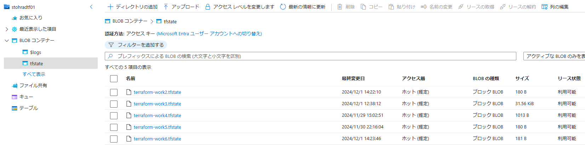
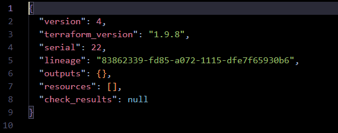